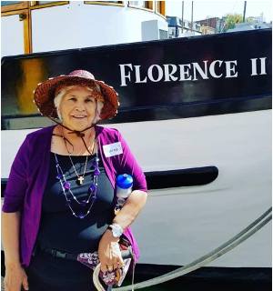
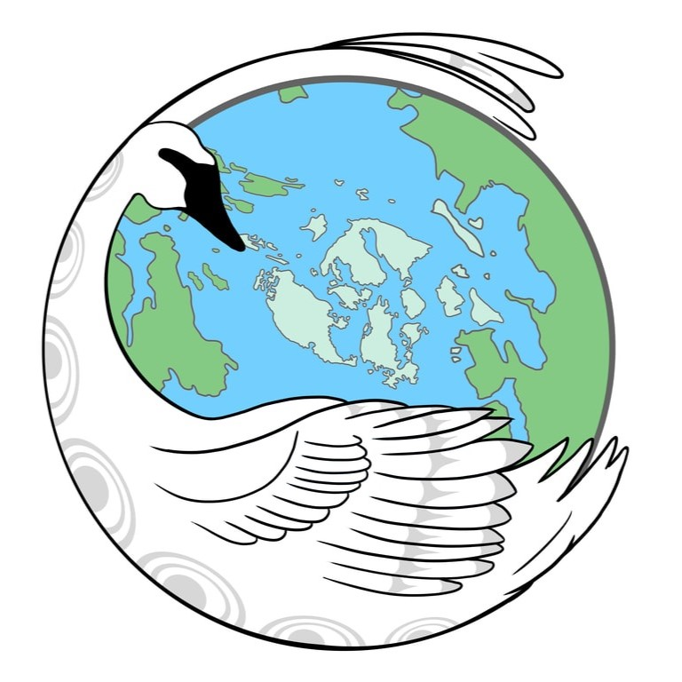
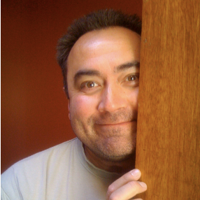
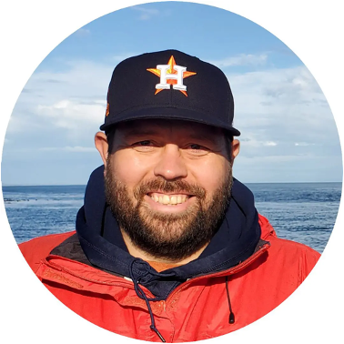
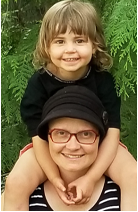

About the project
The Xetthecum story map is based on an open source ecocultural mapping framework designed to serve the initiatives of the Indigenous-led organization Whiteswan Environmental (WE). The aim of this collaborative work is to restore traditional Indigenous practices and access to place, supporting thriving cultures and coastal ecosystems for future generations in the Salish Sea. WE initiated the Spirit of the Sxwo’le (SOS) Coalition, which guides its collaboration with the Institute for Multidisciplinary Ecological Research in the Salish Sea (IMERSS) and other non-Indigenous organizations, ensuring that work proceeds with respect for Indigenous leadership and protocols of cultural sensitivity and cultural humility. To learn more about the project and collaboration with Whiteswan Environmental please watch the YouTube video Ecocultural Mapping in the Salish Sea.
Xetthecum (Retreat Cove, Galiano Island) was chosen for our pilot project because there was already a fair amount of existing information regarding the area’s biodiversity and cultural history. These existing resources included historical and contemporary biodiversity data, terrestrial ecosystem mapping, video storytelling, and published ecocultural resources, as well as knowledge shared by Penelakut elder, Thiyuas (Florence James). We supplemented this information by adapting documentation from past participatory mapping of Galiano Island’s ecological communities, and deepened our knowledge of the cultural significance of Xetthecum and its biodiversity in conversation with Indigenous community members, including Augie Sylvester, Thiyuas, Austin Baines, Jeannine Georgeson, Rosemary Georgeson, Mally Joe, Lorne Silvey, Augie Sylvester Jr., Bernie Sylvester, Fred Wilson, Levi Wilson, Roo Wilson, and Wave Wilson. The Xetthecum story map includes cultural information about places, species, and ecological communities, though it does not explicitly reference sacred Indigenous knowledge. We present iconographic representations of cultural values for the species we learned about, only adding details about cultural uses where community members openly shared their knowledge in interviews. As a pilot project, we hope that this story map can become the starting point for more conversations, as we continue to learn from elders and other Indigenous members of the community. In creating this open source story mapping framework, we also aspired to set an example for ecocultural mapping as a professional conservation practice among the next generation of land stewards. We envision these practices flourishing in the future, fostering intergenerational, cross-cultural, multidisciplinary, and transboundary skill-sharing and knowledge exchange.
Project team

Thiyaas (Florence James)
Penelakut Elder and Knowledge Holder

Augie Sylvester
Penelakut Elder and Knowledge Holder

Johnny Aitken
Indigenous Creative Director
Austin Baines
Indigenous youth
Jeanine Georgeson
Project Lead
Deondre Smiles
Guidance

Levi Wilson
Indigenous Language Framework Developer
Roo Wilson
Indigenous youth
Kusemaat (Shirley Williams)
Co-founder, Whiteswan Environmental
Dana Ayotte
Inclusive Designer
Antranig Basman
Bioinformatics Specialist
Colin Clark
Inclusive Designer
Jack Garton
Audio Specialist
Deblekha Guin
Project Guidance

Cait Harrigan
Website Development
Jim Hodgson
Map Development

Emily Menzes
Design and Language Framework Support
Andrew Simon
Biodiversiy Specialist
Maggie Slein
BioBlitz Coordinator
Tei Taiyarï
Project Coordinator
Karolle Wall
Media Contributor
Sponsors and Project Partners
Whiteswan Environmental
Access to Media Education Society
Capital Regional District
Community Engagement Fellows
Galiano Conservancy Association
Galiano Naturalists
Healthy Watersheds Initiative
Hunterston Farm, Galiano Island
Inclusive Design Research Centre
Indigenous Watersheds Initiative
Islands Trust Council
MakeWay
MIT Indigenous Communities Fellowship
Social Sciences and Humanities Research Council
Southern Gulf Islands Community Resource Centre
Northeast Pacific Coastal Biodiversity Action Network
UBC BRITE Internship Program